Work in progress
The content of this page was not yet updated for Godot
4.7
and may be outdated. If you know how to improve this page or you can confirm
that it's up to date, feel free to open a pull request.
Prototyping levels with CSG
CSG stands for Constructive Solid Geometry, and is a tool to combine basic shapes or custom meshes to create more complex shapes. In 3D modeling software, CSG is mostly known as "Boolean Operators".
Level prototyping is one of the main uses of CSG in Godot. This technique allows users to create the most common shapes by combining primitives. Interior environments can be created by using inverted primitives.
Note
The CSG nodes in Godot are mainly intended for prototyping. There is no built-in support for UV mapping or editing 3D polygons (though extruded 2D polygons can be used with the CSGPolygon3D node).
If you're looking for an easy to use level design tool for a project, you may want to use FuncGodot or Cyclops Level Builder instead.
See also
You can check how to use CSG nodes to build various shapes (such as stairs or roads) using the Constructive Solid Geometry demo project.
Introduction to CSG nodes
Like other features of Godot, CSG is supported in the form of nodes. These are the CSG nodes:
CSGCylinder3D (also supports cone)

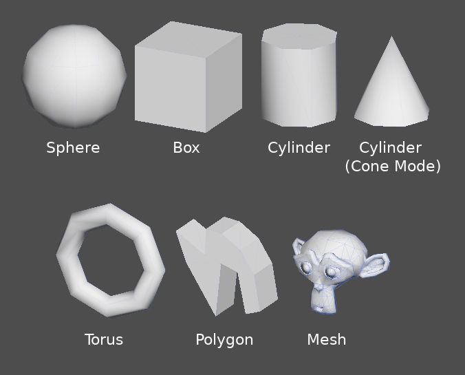
CSG tools features
Every CSG node supports 3 kinds of boolean operations:
Union: Geometry of both primitives is merged, intersecting geometry is removed.
Intersection: Only intersecting geometry remains, the rest is removed.
Subtraction: The second shape is subtracted from the first, leaving a dent with its shape.

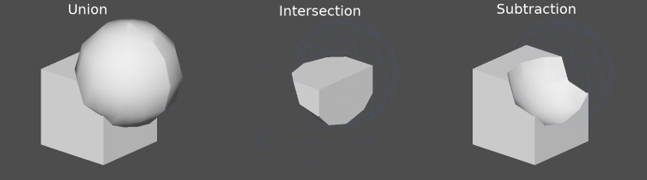
CSGPolygon
The CSGPolygon3D node extrude along a Polygon drawn in 2D (in X, Y coordinates) in the following ways:
Depth: Extruded back a given amount.
Spin: Extruded while spinning around its origin.
Path: Extruded along a Path node. This operation is commonly called lofting.


Note
The Path mode must be provided with a Path3D node to work. In the Path node, draw the path and the polygon in CSGPolygon3D will extrude along the given path.
Custom meshes
Custom meshes can be used for CSGMesh3D as long as the mesh is manifold. The mesh can be modeled in other software and imported into Godot. Multiple materials are supported.
For a mesh to be used as a CSG mesh, it is required to:
be closed
have each edge connect to only two faces
have volume
And it is recommended to avoid:
negative volume
self-intersection
interior faces
Godot uses the manifold library to implement CSG meshes. The technical definition of "manifold" used by Godot is the following, adapted from that library's definition of "manifold":
Every edge of every triangle must contain the same two vertices (by index) as exactly one other triangle edge, and the start and end vertices must switch places between these two edges. The triangle vertices must appear in clockwise order when viewed from the outside of the Godot Engine manifold mesh.

Making an existing mesh manifold with Blender
If you have an existing mesh that is not already manifold, you can make it manifold using Blender.
In Blender, install and enable the 3D Print Toolbox addon.
Select the mesh you want to make manifold. Open the sidebar by clicking on the arrow:
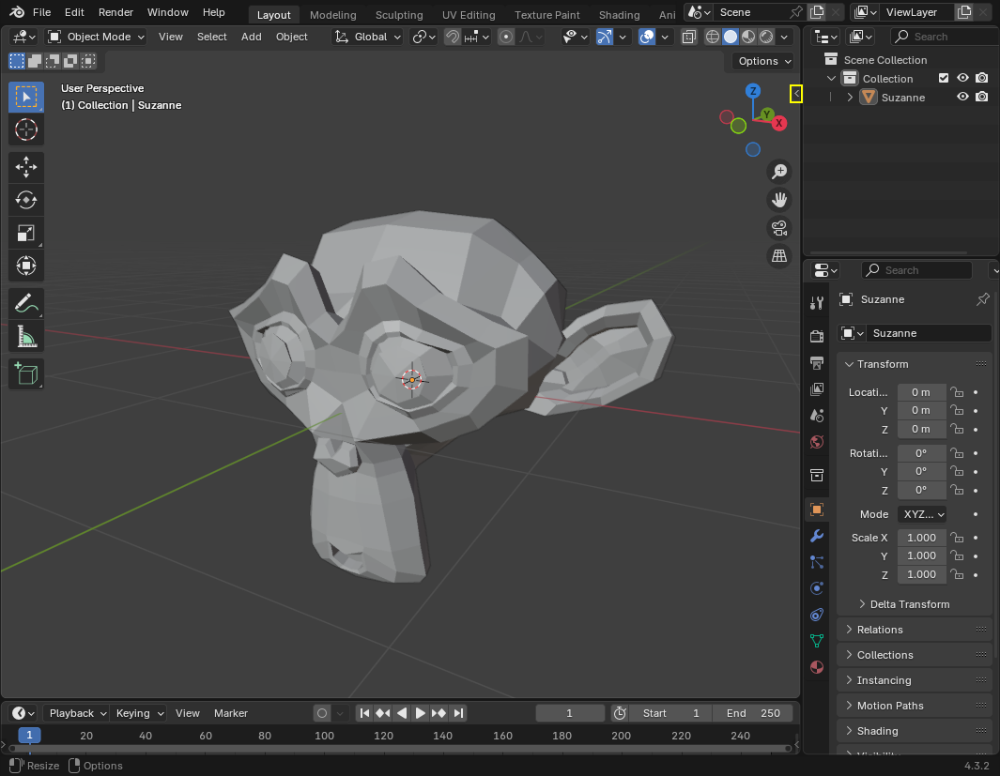
In the 3D Print tab, under Clean Up, click the Make Manifold button:

The mesh should now be manifold, and can be used as a custom mesh.
CSGCombiner3D
The CSGCombiner3D node is an empty shape used for organization. It will only combine children nodes.
Processing order
Every CSG node will first process its children nodes and their operations: union, intersection, or subtraction, in tree order, and apply them to itself one after the other.
Note
In the interest of performance, make sure CSG geometry remains relatively simple, as complex meshes can take a while to process. If adding objects together (such as table and room objects), create them as separate CSG trees. Forcing too many objects in a single tree will eventually start affecting performance. Only use binary operations where you actually need them.
Prototyping a level
We will prototype a room to practice the use of CSG tools.
Tip
Working in Orthogonal projection gives a better view when combining the CSG shapes.
Our level will contain these objects:
a room,
a bed,
a lamp,
a desk,
a bookshelf.
Create a scene with a Node3D node as root node.
Tip
The default lighting of the environment doesn't provide clear shading at some angles. Change the display mode using Display Overdraw in the 3D viewport menu, or add a DirectionalLight node to help you see clearly.

Create a CSGBox3D and name it room, enable Invert Faces and change the
dimensions of your room.
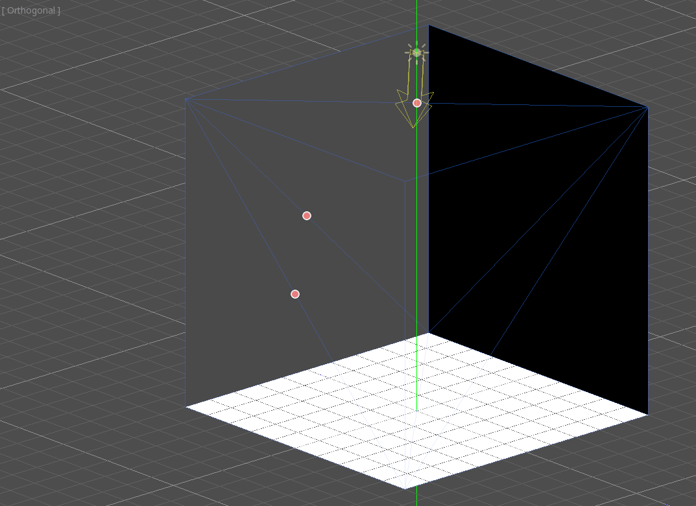
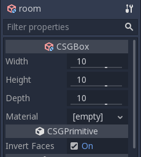
Next, create a CSGCombiner3D and name it desk.
A desk has one surface and 4 legs:
Create 1 CSGBox3D children node in Union mode for the surface and adjust the dimensions.
Create 4 CSGBox3D children nodes in Union mode for the legs and adjust the dimensions.
Adjust their placement to resemble a desk.

Note
CSG nodes inside a CSGCombiner3D will only process their operation within the combiner. Therefore, CSGCombiner3Ds are used to organize CSG nodes.
Create a CSGCombiner3D and name it bed.
Our bed consists of 3 parts: the bed, the mattress and a pillow. Create a CSGBox3D and adjust its dimension for the bed. Create another CSGBox3D and adjust its dimension for the mattress.

We will create another CSGCombiner3D named pillow as the child of bed.
The scene tree should look like this:

We will combine 3 CSGSphere3D nodes in Union mode to form a pillow. Scale the Y axis of the spheres and enable Smooth Faces.

Select the pillow node and switch the mode to Subtraction; the combined
spheres will cut a hole into the mattress.
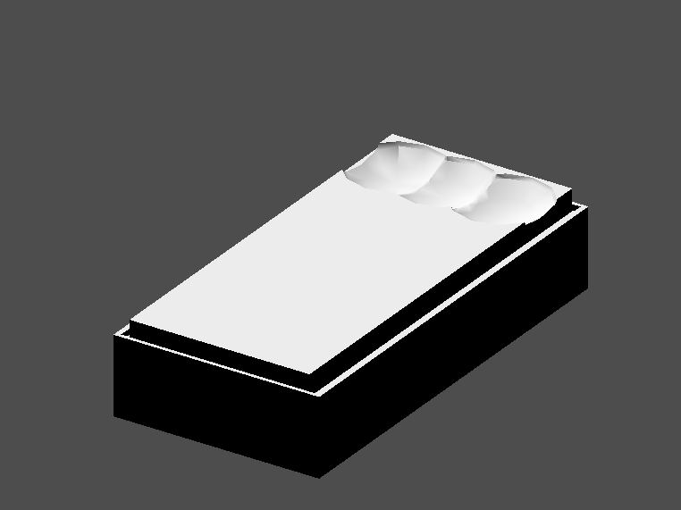
Try to re-parent the pillow node to the root Node3D node; the hole will
disappear.
Note
This is to illustrate the effect of CSG processing order. Since the root node is not a CSG node, the CSGCombiner3D nodes are the end of the operations; this shows the use of CSGCombiner3D to organize the CSG scene.
Undo the re-parent after observing the effect. The bed you've built should look like this:
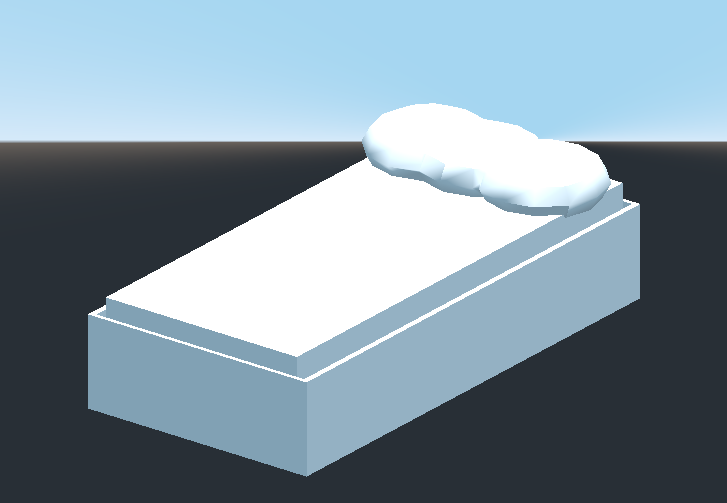
Create a CSGCombiner3D and name it lamp.
A lamp consists of 3 parts: the stand, the pole and the lampshade. Create a CSGCylinder3D, enable the Cone option and make it the stand. Create another CSGCylinder3D and adjust the dimensions to use it as a pole.

We will use a CSGPolygon3D for the lampshade. Use the Spin mode for the CSGPolygon3D and draw a trapezoid while in Front View (numeric keypad 1); this shape will extrude around the origin and form the lampshade.
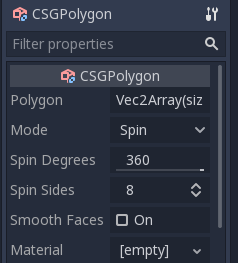

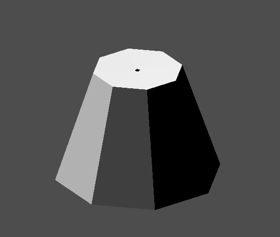
Adjust the placement of the 3 parts to make it look like a lamp.

Create a CSGCombiner3D and name it bookshelf.
We will use 3 CSGBox3D nodes for the bookshelf. Create a CSGBox3D and adjust its dimensions; this will be the size of the bookshelf.

Duplicate the CSGBox3D and shorten the dimensions of each axis and change the mode to Subtraction.
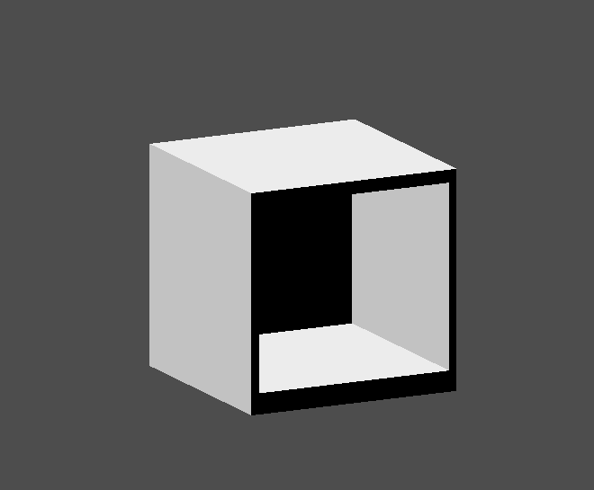
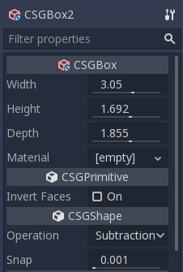
You've almost built a shelf. Create one more CSGBox3D for dividing the shelf into two levels.

Position your furniture in your room as you like and your scene should look this:
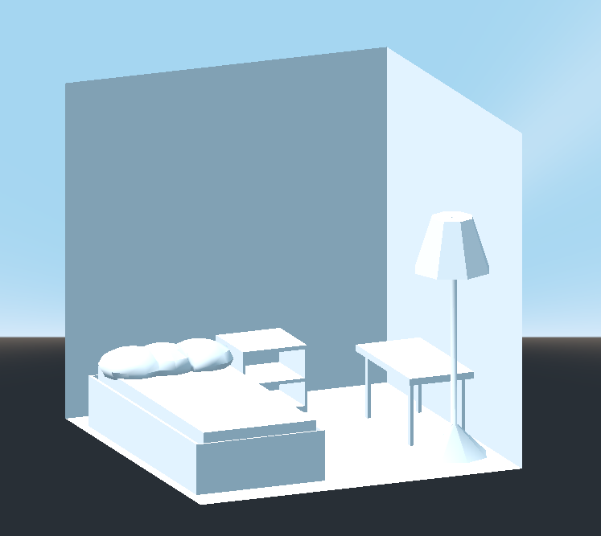
You've successfully prototyped a room level with the CSG tools in Godot. CSG tools can be used for designing all kinds of levels, such as a maze or a city; explore its limitations when designing your game.
Using prototype textures
Godot's Standard Material 3D and ORM Material 3D supports triplanar mapping, which can be used to automatically apply a texture to arbitrary objects without distortion. This is handy when using CSG as Godot doesn't support editing UV maps on CSG nodes yet. Triplanar mapping is relatively slow, which usually restricts its usage to organic surfaces like terrain. Still, when prototyping, it can be used to quickly apply textures to CSG-based levels.
Note
If you need some textures for prototyping, Kenney made a set of CC0-licensed prototype textures.
There are two ways to apply a material to a CSG node:
Applying it to a CSGCombiner3D node as a material override (Geometry > Material Override in the Inspector). This will affect its children automatically, but will make it impossible to change the material in individual children.
Applying a material to individual nodes (Material in the Inspector). This way, each CSG node can have its own appearance. Subtractive CSG nodes will apply their material to the nodes they're "digging" into.
To apply triplanar mapping to a CSG node, select it, go to the Inspector, click the [empty] text next to Material Override (or Material for individual CSG nodes). Choose New StandardMaterial3D. Click the newly created material's icon to edit it. Unfold the Albedo section and load a texture into the Texture property. Now, unfold the Uv1 section and check Triplanar. You can change the texture offset and scale on each axis by playing with the Scale and Offset properties just above. Higher values in the Scale property will cause the texture to repeat more often.
Tip
You can copy a StandardMaterial3D to reuse it across CSG nodes. To do so, click the dropdown arrow next to a material property in the Inspector and choose Copy. To paste it, select the node you'd like to apply the material onto, click the dropdown arrow next to its material property then choose Paste.
Converting to MeshInstance3D
Since Godot 4.4, you can convert a CSG node and its children to a MeshInstance3D node.
This has several benefits:
Bake lightmaps, since UV2 can be generated on a MeshInstance3D.
Bake occlusion culling, since the occlusion culling bake process only takes MeshInstance3D into account.
Faster loading times, since the CSG mesh no longer needs to be rebuilt when the scene loads.
Better performance when updating the node's transform if using the mesh within another CSG node.
To convert a CSG node to a MeshInstance3D node, select it, then choose CSG > Bake Mesh Instance in the toolbar. The MeshInstance3D node will be created as a sibling. Note that the CSG node that was used for baking is not hidden automatically, so remember to hide it to prevent its geometry from overlapping with the newly created MeshInstance3D.
You can also create a trimesh collision shape using CSG > Bake Collision Shape. The generated CollisionShape3D node must be a child of a StaticBody3D or AnimatableBody3D node to be effective.
Tip
Remember to keep the original CSG node in the scene tree, so that you can perform changes to the geometry later if needed. To make changes to the geometry, remove the MeshInstance3D node and make the root CSG node visible again.
Exporting as glTF
It can be useful to block out a level using CSG, then export it as a 3d model, to import into 3D modeling software. You can do this by selecting Scene > Export As... > glTF 2.0 Scene.
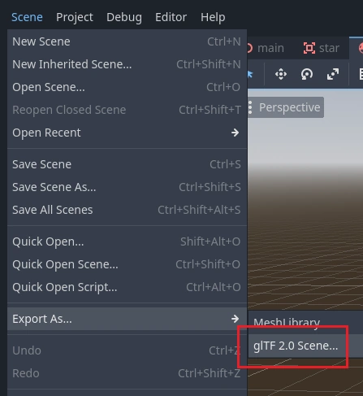